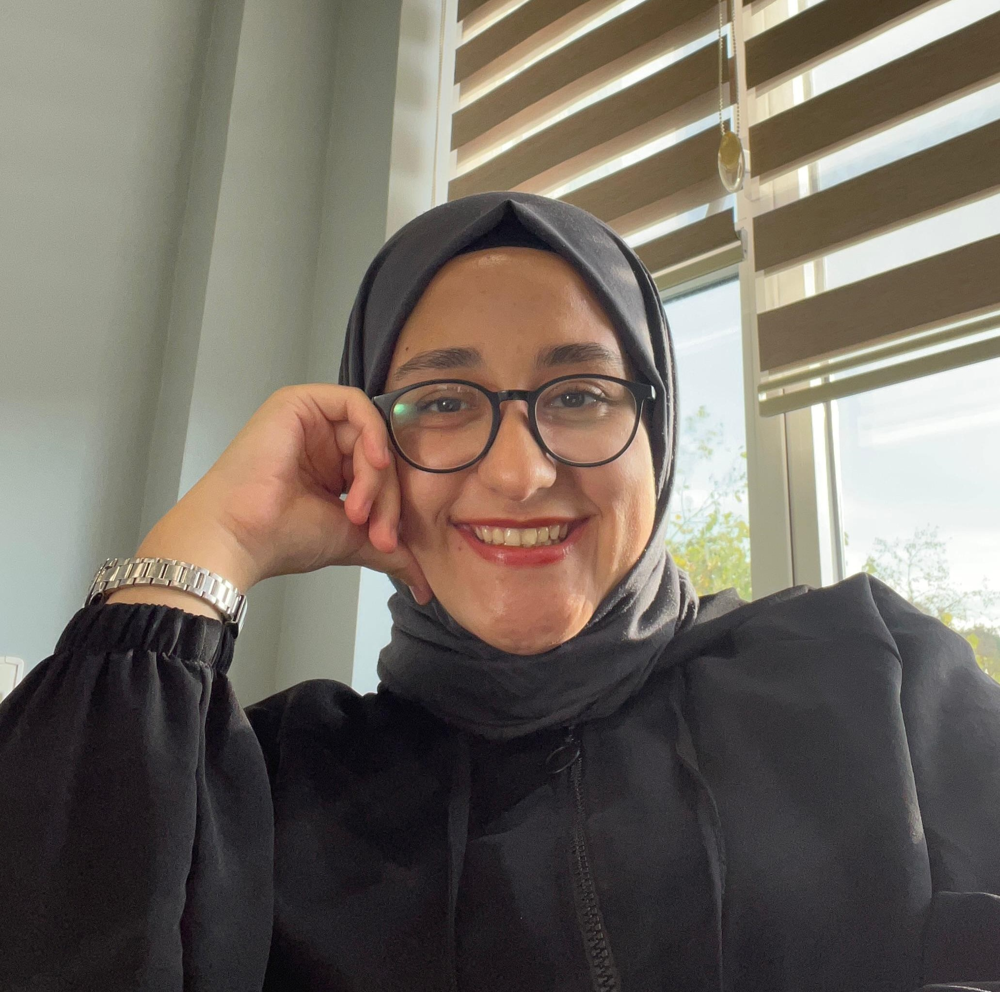

|  |
| HAKKIMDA | Ben Elifsena AYCAN. Balıkesirliyim. Düzce Üniversitesi'nde Bilgisayar Mühendisliği öğrencisiyim. İlgi alanlarım arasında kitap okumak, resim çizmek, teknoloji, ar-ge çalışmalarını takip etmek ve fotoğraf çekmek var. Fotoğraf çekmeyi çok seviyorum. Özellikle gün batımı fotoğraflarını. Bloğumda çektiğim fotoğrafları ve kitap alıntılarını sizlerle paylaşacağım. |